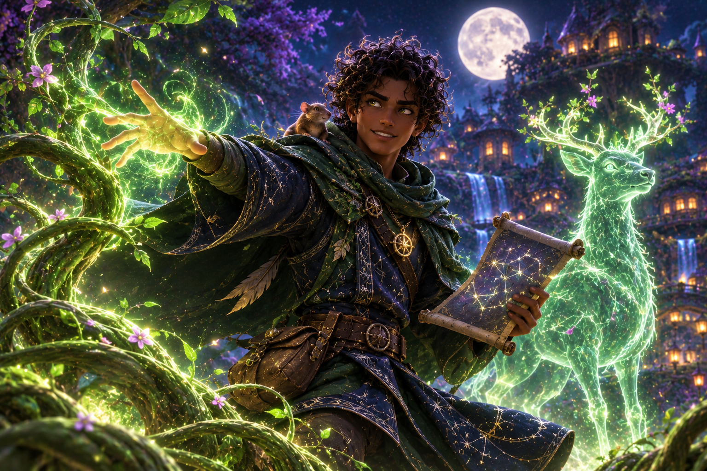

Human Druid · Circle of the Stars · Level 5

"The stars always know the way home."
Musa grew up in Moon Hallow, a glowing forest town of waterfalls, lanterns, and blossoming trees. He spent his childhood running its winding paths and sneaking out at night to lie beneath the great Moon Tree, mapping the constellations until he could name every star in the sky. Uncle Worm, a huge green-skinned old man who helped raise half the kids in town, was the one who taught him that the stars always point the way home.
In Moon Hallow, everyone leaves home when they come of age to see the wider world, and Musa was no different. He packed his star map, said goodbye to Uncle Worm, and set off with his pet rat Remi riding on his shoulder.
His journey led him to a tavern where he met the rest of the troupe, mostly by spilling his drink all over himself. Later, he led them all back to Moon Hallow, where he finally got to show his new friends the home he had been talking about the whole way.
Musa is the happy heart of the troupe. He is warm, optimistic, a little clumsy, and always the first to laugh, even at himself. While everyone else is busy being mysterious, Musa is cheering, snacking, and making friends with everyone in the room. He gets flustered easily, especially around his old crush Beatrice, but when his friends are in danger, his starlight burns brighter than anyone's.
Musa carries a heavy black book called the Grimward, bound in cracked leather and sealed with a clasp shaped like a coiled dragon. He never should have opened it. The moment he did, the book cursed him, and now the Grand Dragon is connected to his mind. Some nights Musa hears its voice in his head, and sometimes he is not sure which thoughts are his own.
But the Grimward also offers something dangerous: a well of great and evil power, waiting for Musa to reach for it. So far, the happiest member of the troupe has kept the book closed. Everyone is quietly hoping he keeps it that way.
Remi is the small brown rat who rides on Musa's shoulder everywhere he goes. He has been with Musa since he left Moon Hallow, and he has survived prison breaks, haunted forests, and a colosseum battle without ever letting go. Remi loves cheese, hates loud bows, and is easily the bravest rat in the realm.